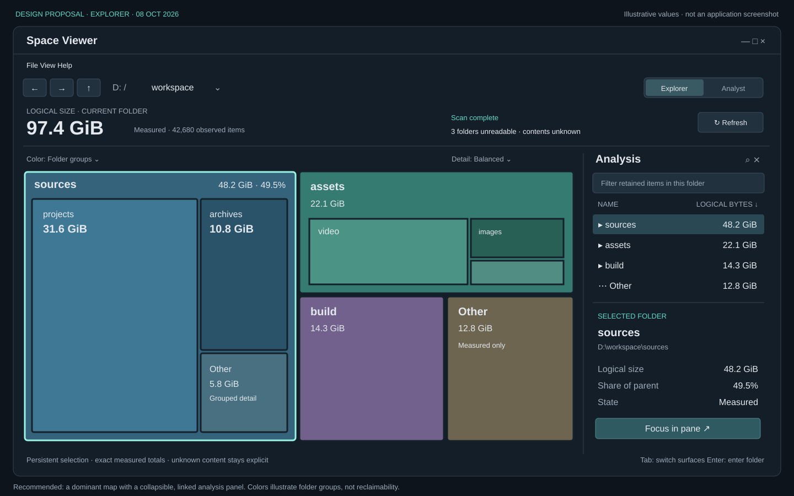
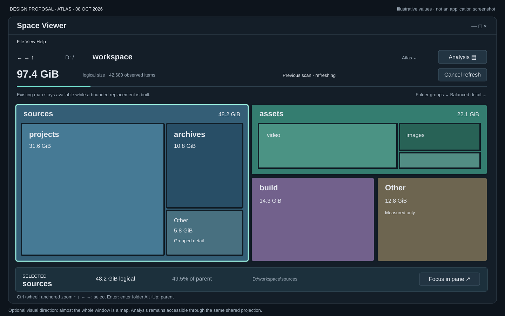
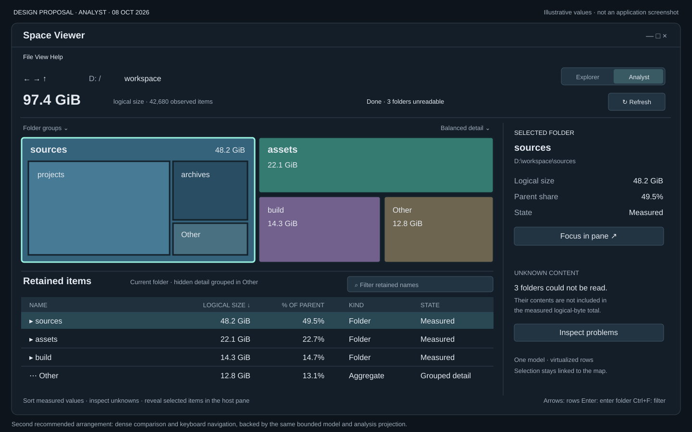

A treemap-first Space Viewer with persistent selection and a linked dense analysis surface. These are vector design proposals; all paths, counts and logical-size values are illustrative. They are not application screenshots or measured performance evidence.

Keep spatial exploration central. A collapsible side panel supplies exact measured values, selected-item details and a route back to the host pane.
Share one bounded model and ID-only analysis projection. Hover stays temporary; selection survives movement. Panel visibility must not trigger rescans or reduce retained detail.

Give the map almost the whole window. Breadcrumbs and anchored zoom support exploration; a compact selection strip keeps exact facts visible.
Dense comparison takes another action. Limit motion and keep Analysis reachable by keyboard. The refreshing state must preserve old/new measurement boundaries.

Sort and compare measured values with keyboard-friendly rows while keeping spatial context above. A pinned inspector shows selected facts and unknown content.
Virtualize rows; never copy every full path. Filtering covers retained items in the current folder. Grouped hidden names are not silently counted as searched.